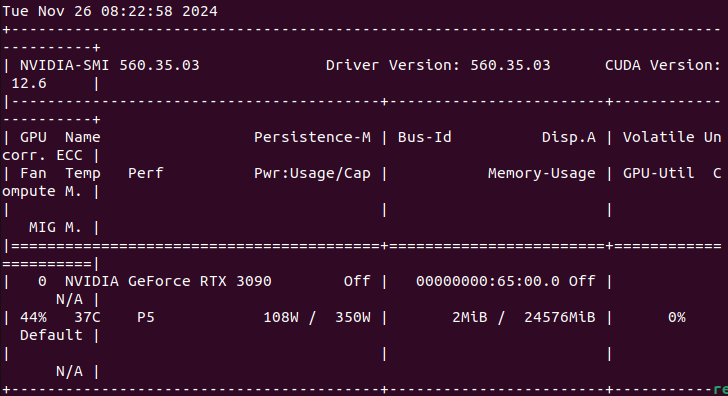
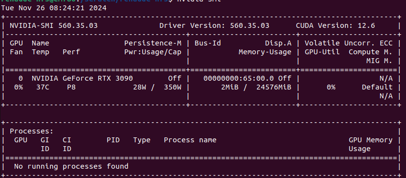
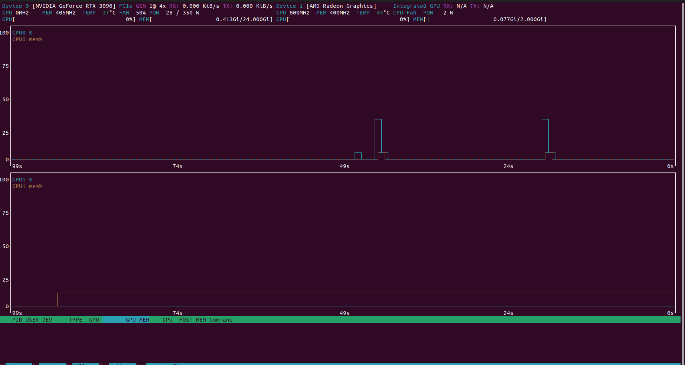
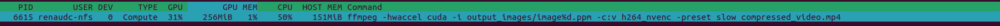

FFMPEG
FFMPEG est une bibliothèque qui consiste à encoder des images en vidéos et désencoder des vidéos en images en utilisant des formats d’entrée et de sortie souhaitées. Il permet aussi d’utiliser un composant spécifique pour le traitement tel que le GPU, le CPU ou encore une puce d’encodage qui est notre cible pour les traitements effectués.
L’utilisation de cette bibliothèque dans ce projet est de simuler au mieux la situation lorsque la caméra filmera l’espace. Les vidéos sont directement obtenues dans un format compressé et ceci peut être décompressé afin d’obtenir une suite d’images au format PPM. C’est sur ces images que l’algorithme de détection va agir pour relever les zones d’intérêts.
Notre objectif est d’adresser une puce matérielle pour encoder une vidéo à partir d’images brutes. En effet, sur le nanosatellite nous aurons uniquement une puce pour faire l’encodage de la vidéo. Pour tester cela, nous allons utiliser FFMPEG avec différentes options pour voir comment sont encodés les images.
La commande suivante permet de le faire :
On peut encoder avec la commande :
ffmpeg -hwaccel cuda -framerate 30 -i output_images/image%d.ppm -c:v h264_nvenc -preset fast -b:v 5M compressed_video.mp4 -loglevel verbose
-hwaccel cuda : Active l’accélération matérielle CUDA pour optimiser le traitement.
-c:v h264_nvenc : Utilise NVENC pour encoder la vidéo au format H.264.
-preset : Permet de changer la vitesse de compression des images, on met slow pour mieux voir l’utilisation du GPU.
On peut stocker l’utilisation du GPU avec la première commande :

Avant

Après
nohup watch -n 1 nvidia-smi > gpu_usage.log &
ffmpeg -hwaccel cuda -i output_images/image%d.ppm -c:v h264_nvenc -preset slow compressed_video.mp4
On regarde l’utilisation du GPU avant et pendant l’exécution de FFMPEG :

Utilisation GPU

Utilisation CPU
Il y a donc une consommation de 80W pour l’encodage. L’utilisation du GPU et du CPU peuvent aussi être vues en direct avec l’exécution du code.
L’encodage utilise donc des capacités du GPU. Ces résultats sont insuffisants pour rester dans les limites de ressources imposées par le nanosatellite. Un travail d’optimisation pour respecter les contraintes énergétiques sera réalisé lorsqu’un programme complet sera fonctionnel pour le projet.